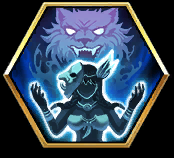

| 이름 | 아카야 | ||
|---|---|---|---|
| CV | 토요사키 아키 | ||
| 희귀도 |  | ||
| 세력 | |||
| 생명 | +25% | 공격 | +25% |
| 방어 | +25% | 마방 | +25% |
| 획득법 | 영웅 소환 | ||
| 레벨 30 | |||
| 시공 3-1 하드 | |||
| 소피아와 함께 운명의문3 | |||
| 매튜와 함께 운명의문5 | |||
| 생명+600, 방어+40, 마방+50 | |||
| 고유기술 : 성령의 수호 | |
|---|---|
|  | |
| 용병 | |


|
|
클래스 최종 능력치(70레벨 호감도4,5 10레벨)
| 클래스 | 시카 영매술사 |
||
|---|---|---|---|
| 생명 | 3513 | ||
| 공격 | 455 | ||
| 지력 | 532 | ||
| 방어 | 267 | ||
| 마방 | 337 | ||
| 기술 | 109 | ||
| 마음의유대4 | 생명이 70%이하일때 전투중 받는피해 -10% | ||
| 마음의유대7 | 생명이 70%이하일때 입히는피해 +10% | ||
클래스 최종 능력치(70레벨 호감도4,5 10레벨)
| 클래스 | 시카 성녀 |
||
|---|---|---|---|
| 생명 | 3812 | ||
| 공격 | 552 | ||
| 지력 | 464 | ||
| 방어 | 287 | ||
| 마방 | 281 | ||
| 기술 | 146 | ||
| 마음의유대4 | 공격하여 전투진입시 받는피해 -10% | ||
| 마음의유대7 | 공격을 받아 전투진입시 입히는피해 +10% | ||
재료정보
| 중앙2~10순서 |


|
|---|---|
| 유대 |


|
| 각성 |


|
| T1 |

|
|---|---|
| T2 |
|
| T1 |


|
|---|---|
| T2 |


|
| T3 |


|
| T1 |


|
|---|---|
| T2 |


|
| T3 |


|
| T4 |


|
| T1 |


|
|---|---|
| T2 |


|
| T3 |


|
| T1 |

|
|---|---|
| T2 |

|
| T3 |

|
| T4 |


|
스킬 정보
| 어둠의 낫(COST 2) | |||
| 유형 | 마법 피해 | 쿨타임 | 2턴 |
|---|---|---|---|
| 사거리 | 2칸 | 범위 | 단일 |
 |
[마법 피해]단일 적 부대를 공격해 1.3배의 피해를 준다. 적의 마방을 30% 무시. 전투 후 준 피해량의 50%만큼 회복한다. | ||
| 시카의 피(COST 1) | |||
| 유형 | 지원 | 쿨타임 | 5턴 |
|---|---|---|---|
| 사거리 | 자신 | 범위 | 단일 |
| [지원]사용 후 자신의 공격과 지력 중 낮은 능력치를 50%만큼 상승, 3턴 지속. 사용 후 추가로 2칸 이동할 수 있고 다시 공격할 수 있다. | |||
| 사망의 포효(COST 2) | |||
| 유형 | 지원 | 쿨타임 | 3턴 |
|---|---|---|---|
| 사거리 | 늑대혼 | 범위 | 단일 |
| [지원]전장에 [늑대혼]이 있을시 사용가능 늑대혼을 소멸시키며 늑대혼 주변 3칸 이내 모든 적군에게 0.2배의 물리범위 피해를 입힌다. 이후 0.2배의 마법범위 피해도 입힌다. 또한, 약화효과 2개 부여 | |||
| 레지스트(COST 1) | |||
| 유형 | 지원 | 쿨타임 | 1턴 |
|---|---|---|---|
| 사거리 | 3칸 | 범위 | 단일 |
 |
[지원]액티브 스킬, 1개 부대의 마방 +30% 및 면역: '기절','강화 방해','이동력 감소', 2턴지속. | ||
| 야만성 폭발(COST 2) | |||
| 유형 | 지원 | 쿨타임 | 3턴 |
|---|---|---|---|
| 사거리 | 2칸 | 범위 | 단일 |
 |
[지원]전장에 [늑대혼]이 있을시 사용가능 늑대혼을 소멸시키며, 1개의 아군 부대를 늑대 영혼의 위치로 순간이동, 이미 행동종료된 경우일 경우, 재행동 가능(플레이어 유닛에게만 사용가능) | ||
| 야성의 힘(COST 2) | |||
| 유형 | 지원 | 쿨타임 | 3턴 |
|---|---|---|---|
| 사거리 | 늑대혼 | 범위 | 단일 |
| [지원]전장에 [늑대혼]이 있을시 사용가능 늑대혼을 소멸시키며 자신주위 3칸이내 모든 아군에게 '이동력+2','공격,지력 +30%' 부여, 2턴 지속 | |||
| 철벽(COST 1) | |||
| 유형 | 패시브 | ||
|---|---|---|---|
 |
[패시브]부대 생명 90% 이상일시 방어, 마방 +10%. | ||
| 투창(COST 2) | |||
| 유형 | 물리 피해 | 쿨타임 | 2턴 |
|---|---|---|---|
| 사거리 | 2칸 | 범위 | 단일 |
| [물리 피해]단일 적에게 0.8배 피해를 입힘. 공격 전 이동거리 1칸마다 피해 +20%(최대 +60%). 전투 후 재이동 +2칸, 근접 병사를 휴대 시 병사도 동시에 공격 가능. | |||
생애
| 영웅소개 | ◆키/몸무게: 168cm / 49kg
◆신체 사이즈: 85/46/76 ◆진영: 시카족 |
|---|---|
| 영웅담1 | 부끄럼을 잘 타는 시카족 소녀. 현재는 시카족의 무녀를 맡고 있다. 겁이 많은 성격 탓에 다른 시카족에게 곱지않은 시선을 받고 있다. 족자의 명으로 인간 마을의 사람들을 잡기 위한 의식을 하던 중, '마을 사람 실종 사건'을 조사하러 온 성검 군단 일행과 만났다.
|
| 영웅담2 | 훌륭한 시카족 무녀였던 모친이 행방불명이 되어, 그 딸이었던 아카야는 겁이 많은 성격임에도 시카 일족을 지키는 책임을 짊어져야 했다. 겁이 많은 성격 탓에, 그녀가 일족의 무녀를 맡은 후, 시카족은 항상 다른 종족의 압박을 받는 상황에 놓여졌다. 시카족이 자신에게 실망한 것을 느끼고, 아카야는 아무리 무서운 상황에 직면해도 스스로에게 계속 '도망치면 안 돼! 강해져야 해!'라고 독려하는 습관이 생겼다..
|
| 영웅담3 | 아카야는 사람을 대하는 것은 어려워하지만, 동물과는 사이가 좋다. 태생부터 동물과 대화할 수 있는 능력을 타고나 동물들은 아카야의 가장 소중한 친구가 되어주었다. 동물들은 언제나 아카야를 지켜주고, 그녀가 위험에 빠지면 항상 숲 어디에서든 달려와 준다. 세상을 떠난 동물들의 영혼도 아카야의 지팡이에 깃들어 그녀와 함께하고 있다. |
| 영웅담4 | '강해진다는 건 어떤 기분이야?' 아카야가 가장 궁금해하는 질문이다. 하지만 그녀 또한 알고 있다. 강대한 힘은 사랑하는 사람들을 지킬 수단에 불과하며, 힘 그 자체를 추구할 것은 아니라는 사실을. 더욱 강대한 힘을 갖고 싶다는 욕망에 사로잡힌 족장이 마족의 꾀임에 넘어가 소피아를 배신했을 때, 아카야는 일족의 행복을 지키고 싶다는 마음을 안고, 매튜 일행과 함께 마족을 쓰러트려 일족과 소피아를 지켜냈다.
|
| 영웅담5 | 절대적인 신뢰를 보낸 무녀가 실종된 탓에, 일족을 지키는 책임을 전부 아카야에게 떠넘겼던 시카족 사람들. 그들은 아카야가 겨우 15살의 소녀라는 사실조차 잊고 있었다. 하지만 그 소년은 사명감에 잔뜩 굳은 아카야를 달래주며, 사람과의 유대의 따뜻함을 일깨워주었다. 아카야는 처음으로 한 사람의 남자에 대해 좀 더 알고 싶다는 생각을 품게 되었다......
|
대사
| 「소환 - 등장대사」 | 아카야입니다 시카. 아카야는 숲을 지키는 무녀고... 시카! 우으으... 얼굴이 빨개졌다니, 아, 아니거든 시카! |
|---|---|
| 「전투 - 전직1」 | 힘이 넘친다 시카? 이거 빨리 모두에게 나눠주고 싶어 시카... |
| 「전투 - 전직2」 | 아카야 강해졌어 시카~! 이제... 엄마도 금방 돌아와 주겠지... 시카... |
| 「전투 - 스킬시전1」 | 아카야 엄청난 무기 들고 있어 시카! |
| 「전투 - 스킬시전2」 | 야, 얕보지 마 시카! |
| 「전투 - 선택1」 | 분명 할 수 있어 시카~! |
| 「전투 - 선택2」 | 회색 늑대 씨, 응원할게 시카! |
| 「전투 - 전투불능」 | 미안해 시카... 다음 번엔... 제대로 할게 시카! |
| 「대화 - 친밀도1」 | 아카야네 사람들은 숲속 깊은 곳에 살고 있으니까... 분명 사람들이 찾지 못할 거야 시카... |
| 「대화 - 친밀도2」 | 아카야가 동물과 얘기할 수 있는 게, 이상한 거야 시카? |
| 「대화 - 친밀도3」 | 시카족의 모두가 아카야한테 엄청 기대하고 있어 시카... 실망시키지 말아야 해 시카... |
| 「대화 - 친밀도4」 | 올빼미 씨는 가만 내버려두고...... 쥐를 선물하면 좋아할까 시카? |
| 「대화 - 친밀도5」 | 모두와 함께 하면, 시카족의 여신 소피아님도 지켜봐 주셔... 아카야는 모두가 정말 좋아 시카! |
| 「대화 - 일상1」 | 마음만으로 소통할 수 있다면 좋을 텐데... 시카. 그러면 아카야를 좋아해줄 텐데 시카.... |
| 「대화 - 기쁨」 | 아카야가 모두와 함께 놀면, 다들 시카족을 좋아해 줄까 시카? |
| 「대화 - 분노」 | 동물을 괴롭히면 안 돼 시카앗! 절대, 절대로 안 돼 시카! |
| 「대화 - 슬픔」 | 엄마, 대체 어디로 가버린 거야 시카...? |
| 「대화 - 수줍음」 | 그, 그런 말 하지 마... 시카. 부끄러워 시카... |
| 「상호작용 - 대사1」 | 지휘관... 불렀어 시카? ...조금 긴장돼... 하지만... 지지 않아 시카! |
| 「상호작용 - 대사2」 | 그 대신, 만약 괜찮다면... 나중에 아카야랑 같이 매한테 먹이 주러 가주지 않을래... 시카...? |
| 「상호작용 - 대사3」 | 아카야 뒤에 숨어 시카! 아카야는... 아카야는 온 힘을 다해 당신을 지킬 거야 시카! |
| 「상호작용 - 호감1」 | 다른 사람이랑 얘기하는 건 어렵지만... 당신과 있으면 마음이 편해 시카... |
| 「상호작용 - 반감1」 | 시, 시카, 아직 마음의 준비가... |
| 「상호작용 - 특수1」 | 또, 또 만나면 기쁠 거야 시카! |
| 「상호작용 - 특수2」 | 동물들이 돌아오라고 부르고 있어 시카... 그럼 또 봐, 시카, 시카! |
본 사이트는 '랑그릿사'의 데이터를 기반으로 작성되었으며, 그에 관련한 모든 저작권, 권리는
©Zilong Game Limited, ©extreme, ©X.D. global에 귀속되어있습니다.
© Untitled. All rights reserved. | Design: HTML5 UP
©Zilong Game Limited, ©extreme, ©X.D. global에 귀속되어있습니다.
© Untitled. All rights reserved. | Design: HTML5 UP